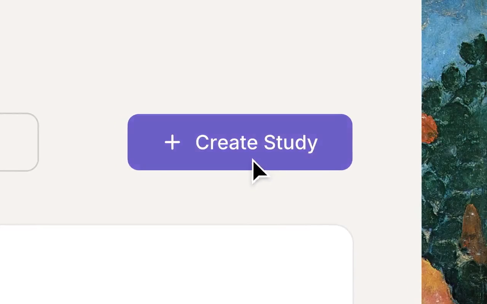
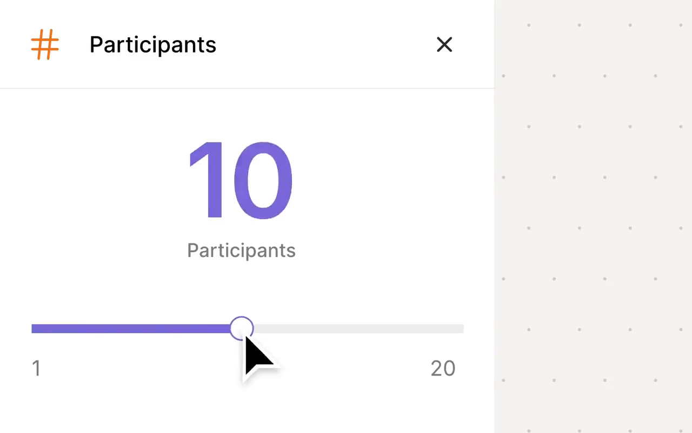
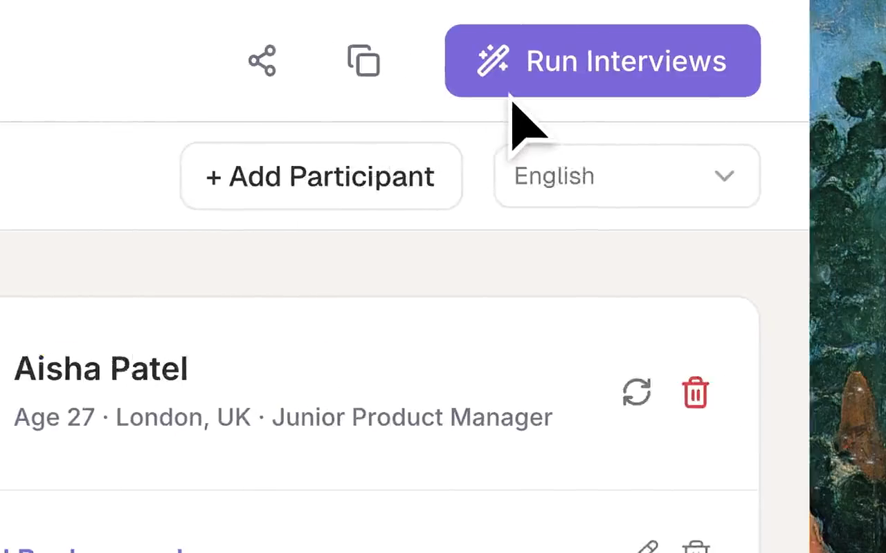
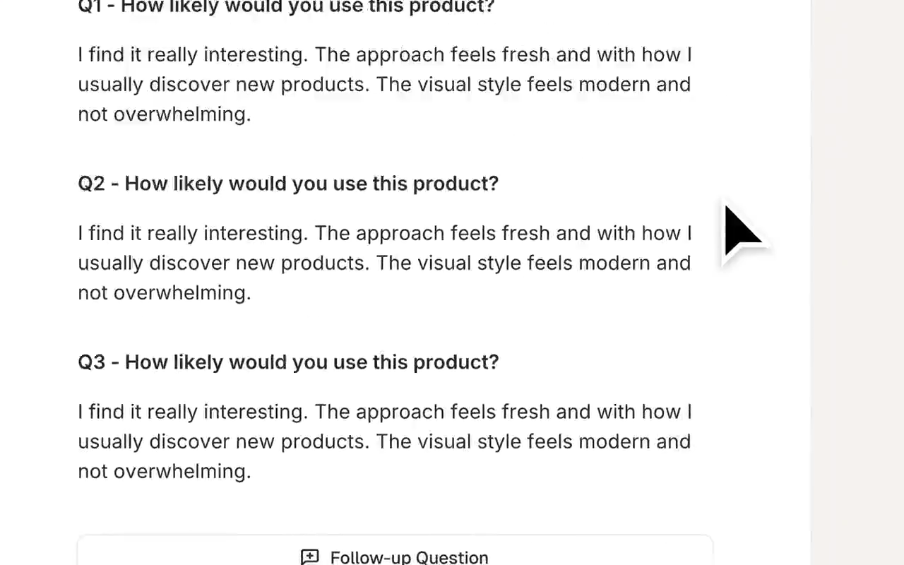
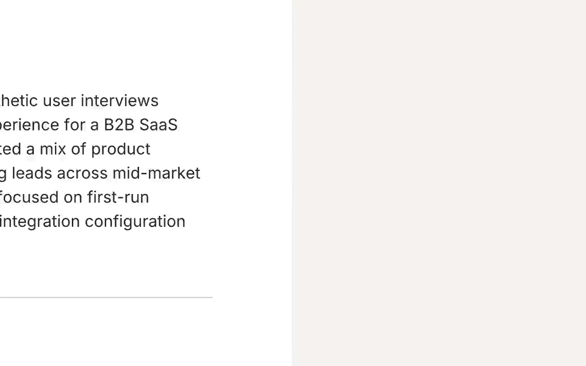
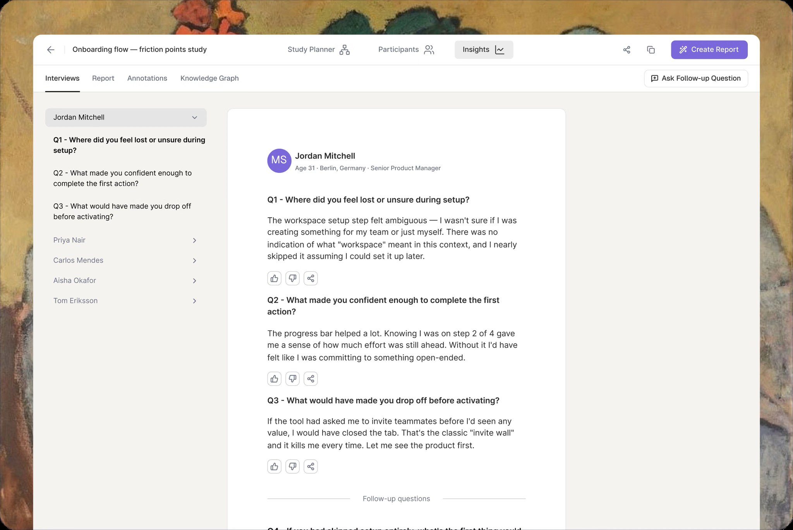
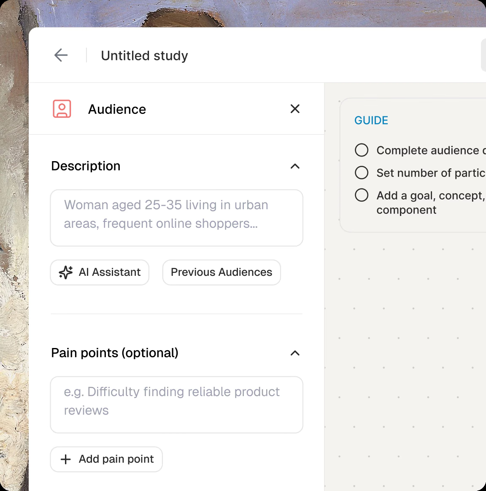

Synthetic Users — 機能・導線・画面
確認日：2026年10月27日。全体比較・画面／動画ギャラリー
調査範囲
合成回答者のinterview・concept testing・research report。人間の実利用の観察や機能テストの成功とは区別。
比較上の位置：合成ユーザー調査の隣接比較。追加理由：Swarm・Tookii等と同じ調査予算で比較され得るが、ブラウザQAとは異なる成果だから。
公式UI素材・interview report動画のみ。自社の資料・実顧客データは送信していない。サイトのparity・精度の数字は当調査で検証していない。
作業の流れ
Audience・pain points → participant数・studyの目的 → interview → participant別回答 → follow-up → report・recommendations
機能の構成
Study workspace、Audience／Participants／Goal、interview、Insights、Create Report、follow-upの公式映像。
下表は公開説明・文書の要約。実操作した範囲は画面一覧と調査範囲に限定し、表全体を実機検証済みとはしない。
| 段階 | 画面・機能 | 入力・操作と次の行動 |
|---|---|---|
| 人物像 | Audience | 属性・行動・心理・職業等で対象を定義する。 |
| 計画 | Study・Goal | 問題探索、concept、custom script等の調査目的を使い分ける。 |
| 参加者 | Participants | 合成人物の数・profileを設定する画面例。 |
| 調査 | Interview | 各合成回答者の文脈を保持して回答を得る説明。 |
| 確認 | Per-participant | 人物ごとの回答を追い、反応の違いを確認する。 |
| 深掘り | Follow-up | 回答から追加質問へ進む入口。 |
| 統合 | Create Report | 共通所見とrecommendationsをまとめる公式映像。 |
| 限界 | 実ブラウザQAとの境界 | 今回の一次情報では、任意アプリを操作し不具合を独立再現する能力は確認していない。 |
人の担当と比較上の着眼点
調査目的と人物像、質問、合成回答の妥当性と人の調査で確かめる範囲。
調査者の解釈：質問への推定回答、画面評価、実ブラウザの目的達成を同じ「AIユーザー」として比較しない。 製品性能の優劣を実証した結論ではない。
動画と見る場面
- Audience→Participants→interview→Report（14.0秒、official-product-video）。公式の掲載元。
見る場面：
1秒：studyの構成、
4秒：参加者profile、
7秒：個別回答、
10秒：follow-up、
13秒：report。


画面一覧
| 画面 | 種別 | 出典 |
|---|---|---|
 UX & Product Research mockup |
official-ui-image | 掲載元 |
 Define your audience mockup |
official-ui-image | 掲載元 |